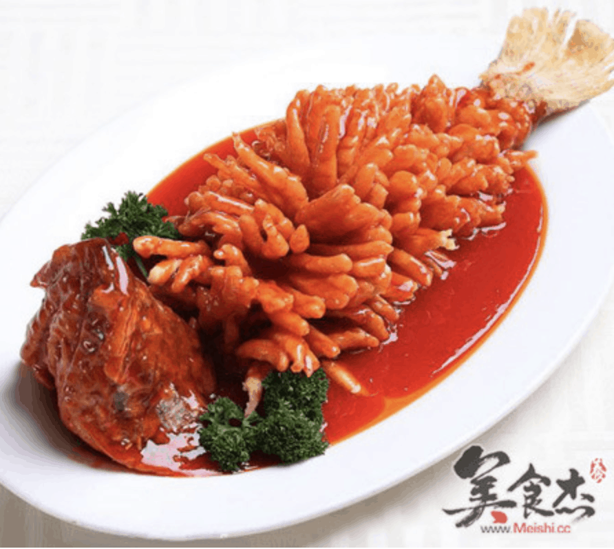
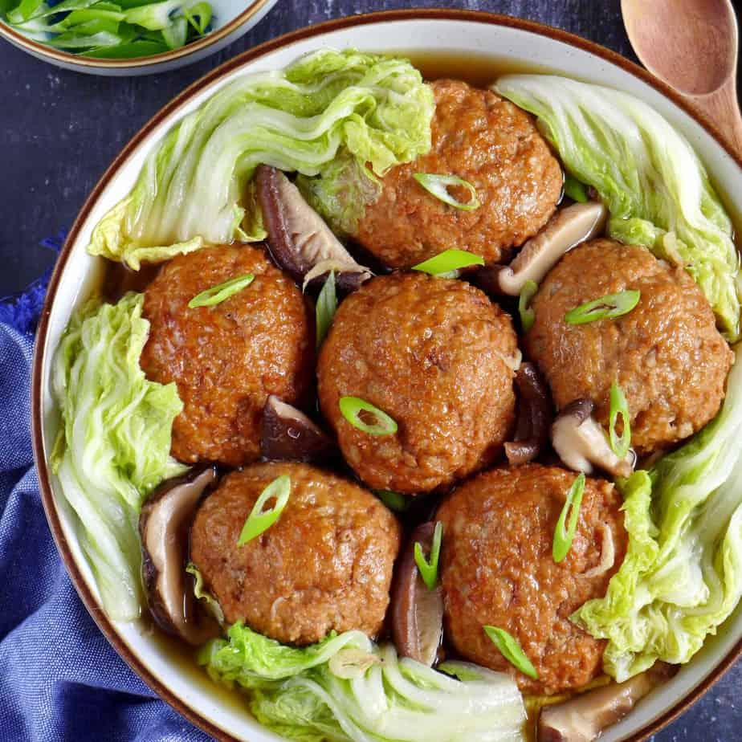
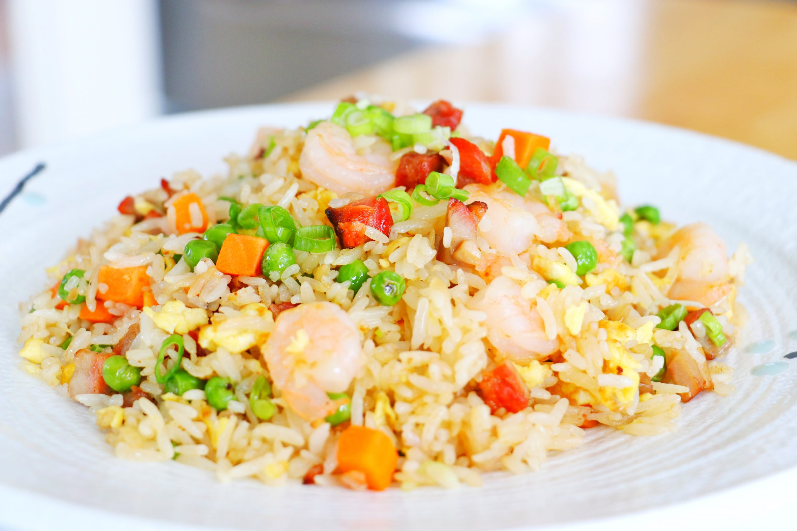

Jiangsu cuisine, also known as Su cuisine, it boasts a long history and originates from the Jiangsu Province, near the Yangtze River Delta.
Freshwater fish, seafood, and seasonal vegetables are the key ingredients in this cuisine. The cooking techniques emphasize steaming, braising, and stewing to create dishes that are delicate, subtle, with an added focus on sweetness.
Sweet and Sour Mandarin Fish (糖醋鲤鱼): A beautiful dish where carp is shaped to resemble a mandarin fish, covered in a tangy sweet-and-sour sauce.
Lion's Head Meatballs (狮子头): Large, tender pork meatballs stewed to perfection, often served with Chinese cabbage.
Yangzhou Fried Rice (扬州炒饭): A famous fried rice dish that incorporates egg, shrimp, ham, and various vegetables for a colorful and tasty medley.
  